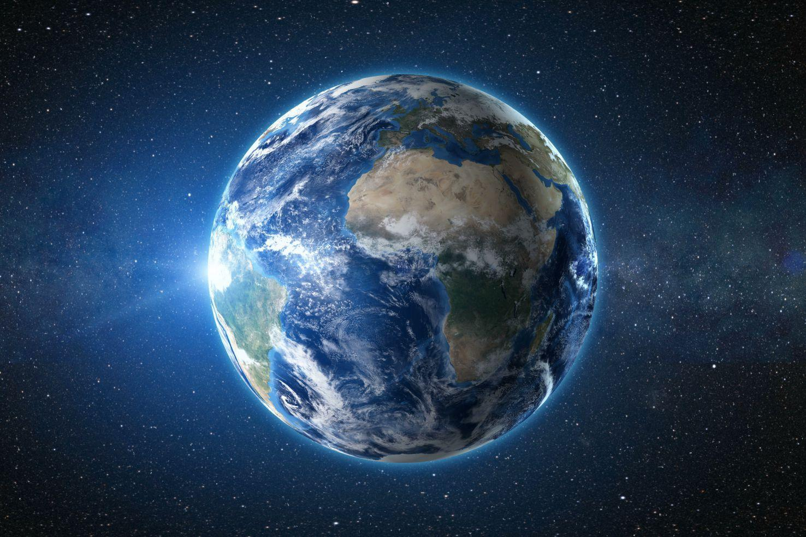

Terra
A Terra é o terceiro planeta mais próximo do Sol, o mais denso e o quinto maior dos oito planetas do Sistema Solar. É também o maior dos quatro planetas telúricos. É por vezes designada como Mundo ou Planeta Azul. Lar de milhões de espécies de seres vivos, incluindo os humanos, a Terra é o único corpo celeste onde é conhecida a existência de vida. O planeta formou-se há 4,56 bilhões de anos, e a vida surgiu na sua superfície um bilhão de anos depois. Desde então, a biosfera terrestre alterou significativamente a atmosfera e outros fatores abióticos do planeta, permitindo a proliferação de organismos aeróbicos, bem como a formação de uma camada de ozônio, a qual, em conjunto com o campo magnético terrestre, bloqueia radiação solar prejudicial, permitindo a vida no planeta. As propriedades físicas do planeta, bem como sua história geológica e órbita, permitiram que a vida persistisse durante este período. Acredita-se que a Terra poderá suportar vida durante pelo menos outros 500 milhões de anos.
A sua superfície exterior está dividida em vários segmentos rígidos, chamados placas tectônicas, que migram sobre a superfície terrestre ao longo de milhões de anos. Cerca de 71% da superfície da Terra está coberta por oceanos de água salgada, com o restante consistindo de continentes e ilhas, os quais contêm muitos lagos e outros corpos de água que contribuem para a hidrosfera. Não se conhece a existência de água no estado líquido em equilíbrio, necessária à manutenção da vida como a conhecemos, na superfície de qualquer outro planeta. Os polos geográficos da Terra encontram-se maioritariamente cobertos por mantos de gelo ou por banquisas. O interior da Terra permanece ativo, com um manto espesso e relativamente sólido, um núcleo externo líquido que gera um campo magnético, e um núcleo interno sólido, composto sobretudo por ferro.